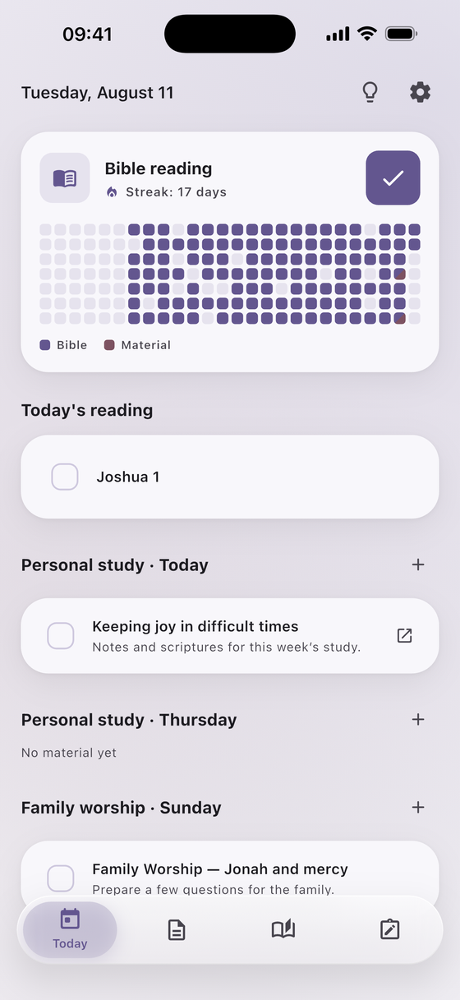

Bible reading & study
Read the Bible,
every day
Pick a pace you can actually keep, plan what you'll study for each study day, and write notes that stay with the chapter they belong to.
Free · No ads · No account · iOS
